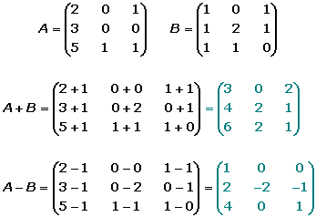
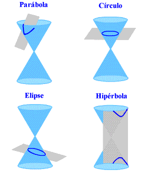
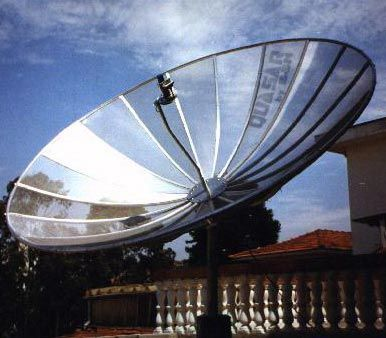

En matemáticas, una matriz es una estructura rectangular de números, símbolos o expresiones dispuestos en filas y columnas.
Se utilizan ampliamente en álgebra lineal y tienen aplicaciones en diversas áreas como gráficos por computadora, programación, física y más.

Tipos de matrices
Las matrices pueden clasificarse de varias maneras según sus propiedades y características. Aquí te dejo algunos de los tipos más comunes:
Matriz cuadrada: Tiene el mismo número de filas y columnas (n × n).
Matriz rectangular: Matriz rectangular: El número de filas y columnas es diferente (m × n).
Matriz diagonal: Es cuadrada y tiene todos sus elementos iguales a cero, excepto los de la diagonal principal.
Matriz nula: Todos sus elementos son iguales a 0.
Características de matrices
Las matrices tienen varias características que dependen de su estructura y propiedades. Aquí algunas fundamentales:
Orden: Se expresa como m × n, donde "m" es el número de filas y "n" el número de columnas.
Elementos: Cada número en la matriz es un elemento y se ubica por su posición (fila, columna).
Suma y resta: Se pueden sumar o restar matrices si tienen el mismo orden, operando elemento por elemento.
Usos de un matrices
Las matrices desempeñan un papel fundamental en una amplia gama de disciplinas, desde la matemática pura hasta aplicaciones avanzadas
en la tecnología y la ciencia.
Transformaciones geométricas: En gráficos por computadora, se emplean para rotaciones, escalado y traslaciones.
Manipulación de imágenes: Los píxeles de una imagen pueden representarse como una matriz.
Procesamiento de señales: Se usan en audio e imágenes digitales para filtrar y transformar señales.
Modelado tridimensional: En gráficos en 3D, se aplican para la transformación de objetos en coordenadas espaciales.
Secciones Conicas
Que es una seccion conica
Una sección cónica es una curva geométrica que se obtiene al cortar un cono con un plano en diferentes posiciones y ángulos.
Dependiendo de la inclinación del plano con respecto al eje del cono, se pueden obtener distintas figuras, cada una con propiedades
únicas y aplicaciones fundamentales en la ciencia, la ingeniería y la tecnología.

Que es una Parabola
Parábola: Se forma cuando el plano es paralelo a una de las generatrices del cono, produciendo una curva abierta que nunca se cierra.
Su ecuación matemática tiene un uso extensivo en el análisis de trayectorias en física, ingeniería y tecnología. Los espejos parabólicos
permiten concentrar la luz o señales en un solo punto, siendo utilizados en telescopios, reflectores de antenas satelitales y faros automotrices.
Que es una Circulo
Circunferencia: Se genera cuando el plano corta el cono de manera perpendicular a su eje, formando una figura perfectamente
cerrada con todos sus puntos equidistantes de un centro. Es una de las formas más estudiadas en geometría y aparece en múltiples fenómenos
naturales y tecnológicos, desde las órbitas circulares hasta el diseño de ruedas y engranajes.
Que es una Elipse
Elipse: Se forma cuando el plano cruza el cono en un ángulo oblicuo sin llegar a cortar ambas hojas del cono. Una de sus
propiedades más notables es que la suma de las distancias desde cualquier punto de la curva hacia dos focos fijos es constante. Las elipses
tienen aplicaciones en la astronomía, ya que las órbitas de los planetas alrededor del Sol siguen trayectorias elípticas, además de aparecer
en sistemas ópticos avanzados y en el diseño de antenas parabólicas para telecomunicaciones.

Que es una hiperbola
Hipérbola: Se genera cuando el plano corta ambas hojas del cono, dando como resultado dos ramas separadas que se extienden
indefinidamente. La hipérbola es clave en el estudio de ondas y señales, en los sistemas de navegación GPS y en modelos de movimiento de
objetos que viajan a velocidades extremas, como las trayectorias de algunos cuerpos celestes en órbitas hiperbólicas alrededor de estrellas.
Actividad
Durante el Periodo 2 hemos aprendido diversas cosas relacionadas con las matrices y las secciones conicas, pero
la vida no es solo teoria y tambien hemos aprendido como hacer operaciones con matrices y como hacer una seccion
conica dentro de geogebra. Tomando clase en este periodo hemos aprendido que todo nuestra vida cotidiana tiene que
ver la Matematicas.